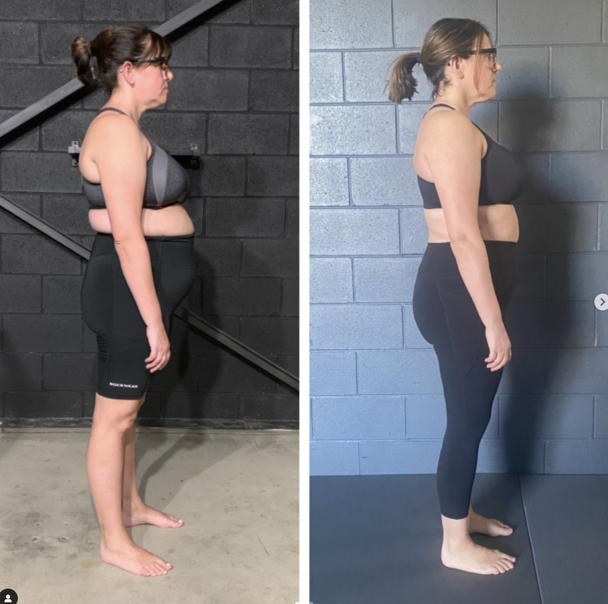

Neck humps are often referred to as a dowager's hump, cervical hump, or hump on the back of the neck. Theycan be a source of discomfort and poor posture. While mainstream approaches often focus on superficial fixes, a biomechanical perspective addresses the root causes of these issues. This allows you to create sustainable, long-term solutions.
We are going to explore how improper spinal alignment, uneven movement patterns, and ineffective core engagement contribute to neck humps. You’ll also discover neck hump exercises and movement principles that align with Functional Patterns (FP) methodology for lasting posture correction.
What Is a Neck Hump and Why Does It Occur?
A neck hump typically forms when the natural curvature of the spine becomes imbalanced. This imbalance may manifest as a humpback neck, a bump on the back of the neck spine, or even visible signs like a bone in the neck sticking out.
Key Causes of Neck Humps
-
Spinal Misalignment
-
The spine is designed to move in a coordinated fashion, with each vertebra contributing to balanced motion. When one area of the spine—such as the thoracic (upper back) or cervical (neck) regions—becomes stiff, other areas must compensate. This overcompensation leads to excessive curvature, resulting in a humping back or hunch in the neck.
-
Core Dysfunction and Pressure Mismanagement
-
The core plays a critical role in spinal stability and alignment. When the core fails to manage internal pressure effectively, the spine compensates, increasing stress in the upper back and neck. This can contribute to the development of a buffalo hump or dowager hump over time.
-
Mainstream Movement Patterns
-
Many conventional training methods prioritise isolated movements, such as crunches or banded shoulder retractions, which fail to address postural imbalances. These exercises can reinforce spinal compression and exacerbate the uneven use of the spine. This furthers the progression of neck humps.

Many common "hunchback workouts" contain passive shoulder rolling and stretching. Tight shoulders are not often the cause of hunch backs. Rather, a lack if spinal integrity and full-body integration are. Passive movements and stretching reinforce the problem.
The Biomechanics of Neck Humps
How the Spine Should Work
A healthy spine distributes movement evenly across its segments. This dynamic coordination prevents any single area from bearing excessive strain. However, poor movement habits, bad posture, and repetitive stress can disrupt this balance.
-
Upper Back (Thoracic Spine): When the thoracic spine lacks mobility, it creates excessive curvature in the neck.
-
Neck (Cervical Spine): If the neck compensates for stiffness in the thoracic region, it results in a pronounced hunchback neck or humpback correction issues.
Common exercises for humpbacks fail to address these spinal imbalances. Many 'hunchback cure exercises' cause more harm than good.

Core and Pressure Dynamics
The core’s ability to manage pressure determines spinal alignment. Proper breathing and diaphragm use stabilize the spine and prevent excessive curvature. Without this foundation, the spine overcompensates, leading to visible humps and reduced quality of life.
How to Get Rid of a Neck Hump Fast
1. Audit Your Current Movement Patterns
Most mainstream exercises reinforce the very issues that create neck humps. Instead, focus on hunchback correction exercises that integrate the entire body. Avoid exercises that isolate muscles without addressing posture, such as crunches or chin tucks done incorrectly.
Figure out how your spine is moving. This offers great insight into why the hump has formed. A simple slow-motion gait analysis with a Human Biomechanics Specialist is a fantastic start.
2. Incorporate Functional Movements
Exercises should mimic the natural mechanics of walking, standing, and rotating. Movements like rotational lunges and core engagement drills can restore balance and reduce spinal compression.
To add to this, exercises should address YOUR specific needs. Someone with an immobile T-spine might benefit from exercises that use and integrate this area. Whereas someone with a hyper-mobile T-spine might benefit from exercises that integrate the structures surrounding this area.
3. Improve Core Stability
Train your core to manage pressure effectively. This means learning to breathe diaphragmatically while maintaining spinal alignment during movements. Over time, this improves posture and reduces the curvature of the spine at the base of the neck.

Neck Hump Exercises and Treatment Options
Here are some general exercises aligned with FP principles to improve posture and address neck humps:
-
Thoracic Spine Mobilisation
-
Use a foam roller to gently mobilise the upper back. Avoid arching your lower back during this exercise to maintain proper spinal alignment. Keep your core engaged throughout.
-
Rotational Core Drills
-
Perform exercises that engage your core while promoting rotation, such as cable woodchops or functional band pulls. Learning to segment the spine between the hips and shoulders is important for spinal health.
-
Gait Training
-
Practice gait drills that focus on balancing the movement of your hips and shoulders. This helps correct postural imbalances and realigns the spine dynamically.
-
Breathing Drills
-
Incorporate diaphragmatic breathing to improve pressure management and reduce compression in the neck and upper back.
Why Mainstream Treatments Fail
Isolation vs. Integration
Common advice like "just stand up straight" or squeeze your shoulder blades can lead to more strain if not supported by a balanced movement system. Similarly, physical therapy approaches that emphasise isolated stretches or strengthening exercises may temporarily relieve symptoms but fail to address root causes.
The SAID Principle
The S.A.I.D principle (Specific Adaptations to Imposed Demands) states that the body adapts to the stresses it experiences. If your exercise regimen reinforces poor patterns, you’ll only deepen imbalances. This will worsen the hunch back neck or humpback correction issues over time. Hunchback treatment exercises should aim to correct the imbalances you experience in your everyday life.
Posture Before and Afters: Sustainable Results with Functional Patterns
With Functional Patterns, clients have reported significant improvements in posture and visible changes in dowager hump before and after photos. By focusing on integrated movements, proper core engagement, and addressing spinal misalignments, it’s possible to achieve lasting relief and restore balance to the body.
Takeaway: How to Remove a Hunchback for Good
The key to how to fix a hunched neck or how to get rid of a hump lies in addressing the underlying biomechanical issues that cause spinal misalignment. By focusing on integrated movement, core stability, and dynamic exercises, you can eliminate neck humps and prevent them from returning.
If you’re struggling with a hump on the back of your neck or searching for neck hump treatment, start with intentional, whole-body exercises that restore balance and alignment. Avoid quick fixes and instead prioritize sustainable, functional movement patterns for a stronger, healthier posture.